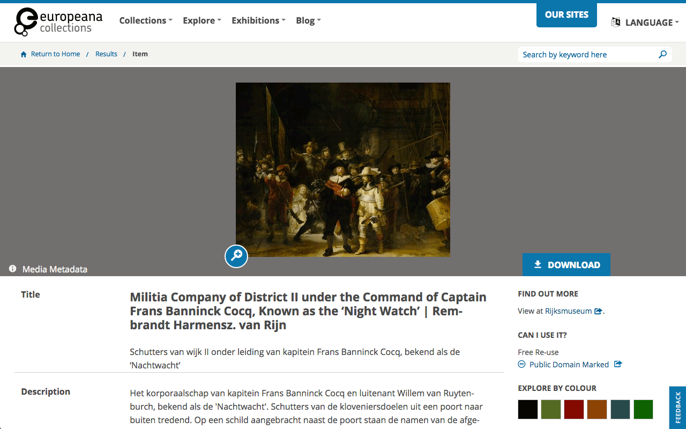
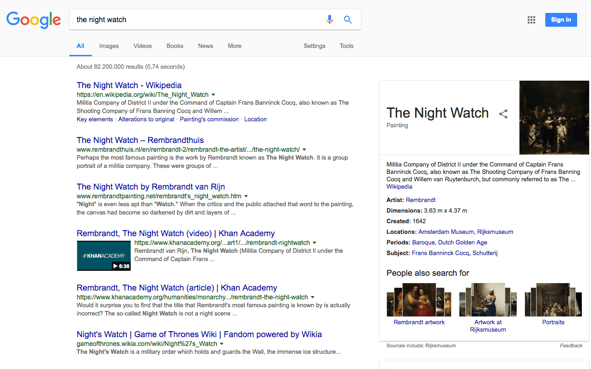

Decentralizing queries at Web scale
Ruben Verborgh
Ghent University – imec
My biggest frustration
about the Semantic Web community?
Only few contributions
are about the Web.
(Another frustration:
few things are
about semantics.)
The Web is our
main differentiator from
related communities.
It’s time to talk
about Web.
Decentralizing queries at Web scale
Decentralizing queries at Web scale
Why are we publishing
Linked Data again?
-
Linked Data provides a flexible data model.
- no more field overloading
-
Linked Data facilitates metadata integration.
-
Linked Data connects metadata across the Web.
- no single source of truth
Why are we publishing
Linked Data again?
-
We demand metadata ownership.
- Aggregators are allowed access—we remain the authority.
-
We have our own metadata priorities.
- We choose the vocabularies.
-
We cannot maintain all metadata ourselves.
- We link to other authorities.
Why are we publishing
Linked Data again?
-
Consumers can browse metadata.
- Show metadata for a specific subject.
-
Consumers can query metadata.
- Show a custom selection of metadata.
-
Aggregators can harvest metadata.
- Why is this still necessary?
Linked Data is decentralized.
There’s no single source of truth.
-
Data diversity is highly important
in an increasingly centralized landscape.
-
Linked Data does it the right way.
- No disconnected silos, but a connected knowledge graph.
-
We can browse easily across nodes…
but how do we query?


Aggregators merge multiple collections
into a single centralized view.
-
They facilitate exploration across datasets.
-
Although currently a technical necessity,
aggregation comes with drawbacks.
- Are records up-to-date and complete?
-
Can/should every dataset be included?
- If so, how to guarantee quality?
- Where is the benefit for the individual publishers?
Are we publishing Linked Data
only for the happy few?
-
If aggregation is a necessity for querying,
then only those with large infrastructures
can make sense of the Web’s Linked Data.
- They offer intelligence as a service.
-
We own (our part of) the data,
but not the intelligence around it.
Decentralizing queries at Web scale
Heterogeneity exists on multiple levels
across metadata collections.
-
Heterogeneity exists on the data level.
- We can choose our own vocabularies.
- How do we ensure they align?
-
Heterogeneity exists on the interface level.
- We can choose how consumers can query our data.
- How can clients consume multiple datasets easily?
Heterogeneity is our best friend
and our largest enemy.
-
Anybody on the Web is free
to publish however they want.
- This works great for people—sometimes.
- It often doesn’t work great for machines.
-
Standardization helps us align.
- delicate balance between flexibility and interoperability
Standardization and agreement
have brought us several building blocks.
-
the Semantic Web family of standards
-
ontologies and vocabularies
- Dublin Core
- DBpedia ontology
- Wikidata ontology
- Schema.org
- …
-
Web APIs
- Linked Data Platform
- OAI-ORE
The current level of standardization
still leaves some areas uncovered.
-
vocabulary usage
-
vocabulary agreement
- the right terms for the right clients
-
Web APIs
- stop reinventing the wheel
Which vocabularies should we use
to describe our metadata, and how?
-
We need to develop examples and guidance.
- vocabulary usage
- URL strategy
- …
-
Reasoning can fill vocabulary gaps.
-
We can never cover all vocabularies.
Web APIs are the Achilles’ heel
of interoperability on the Web.
-
Shall we all have our SPARQL endpoints?
-
Shall we all support the Linked Data Platform?
- That doesn’t solve querying…
-
Shall we all have our own custom APIs?
- That’s not a sustainable way.
The Europeana API evolved
from nightmare to dream.
-
obtain a record on the website as a human
-
obtain a record on the Web API as a machine
-
obtain a record on the website as a machine
- 1 step: just
GET its URL—hurray for content negotiation!
Decentralizing queries at Web scale
Building better clients starts
with building better servers.
-
Web APIs do too much,
and too much in their own way.
-
We don’t need intelligent servers,
but servers that enable intelligence.
-
Client-side intelligence enables use cases
we cannot foresee yet.
Web APIs essentially need
what Linked Data did for data.
-
interoperable
- different clients for different purposes
-
flexible
- not one API to rule them all
-
across silos
It’s not just about others’ data:
we need to practice what we preach.
-
We cannot tell others how to do Linked Data
if we don’t do it ourselves.
-
I publish my own metadata
in a queryable way.
- I’m the authority for my metadata!
-
Do the same, and we’ll have very interesting queries.
![[sad and smiley face]](images/kunsthal.jpg)